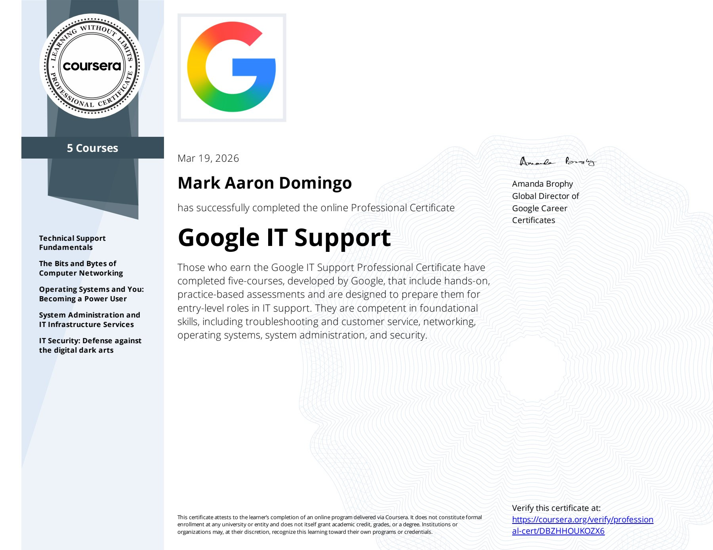
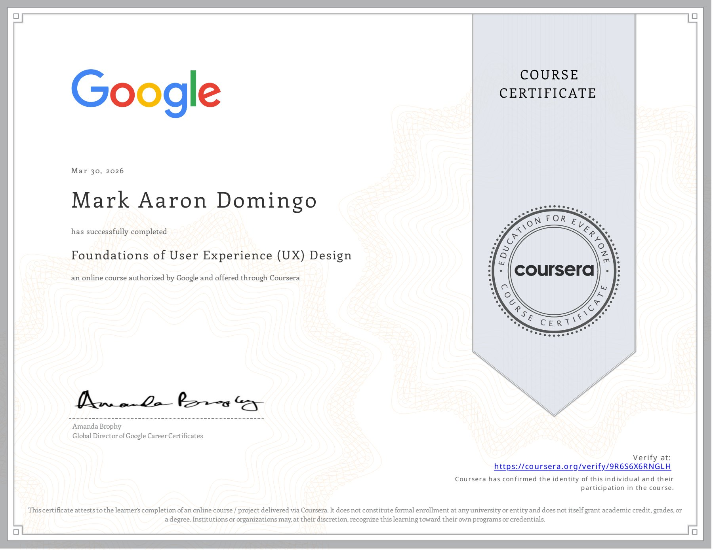
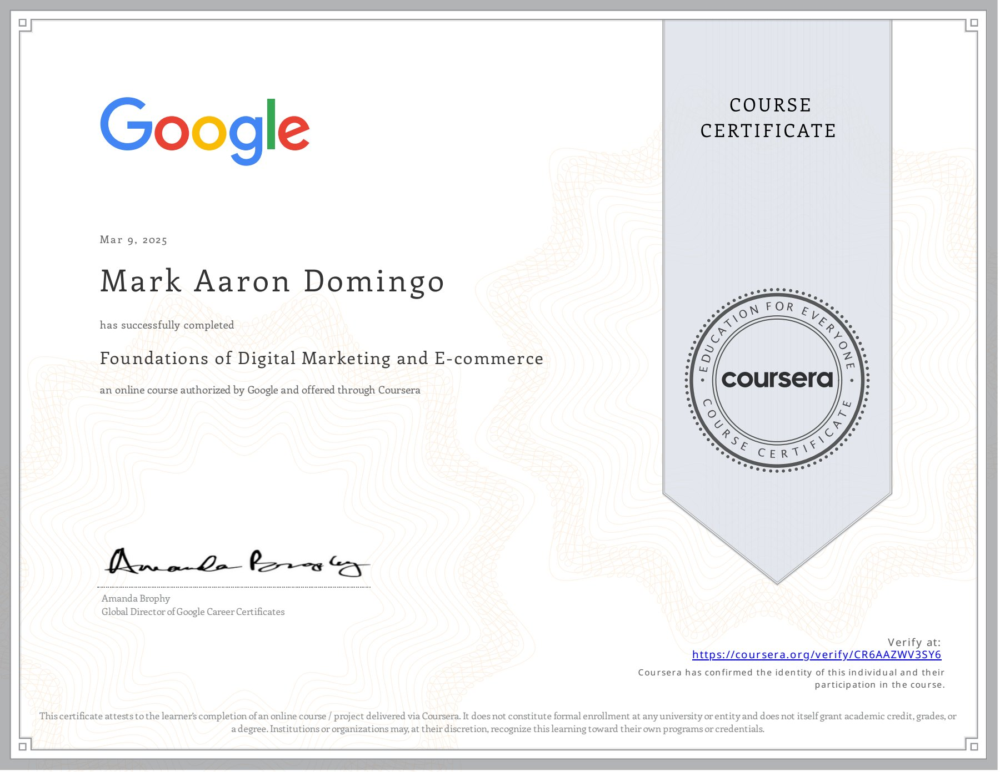

2010
I started learning about computers at the age of 8.

I started learning about computers at the age of 8.
Continued exploring computers and technology through school activities and self-learning curiosity. Participated in desktop publishing and digital poster-making competitions, and contributed to the layout design of the school official newspaper, which also received recognition in campus journalism activities.
Started learning about computer hardware and basic troubleshooting of Windows Operating Systems through Computer Systems Servicing NCII.
Began learning programming fundamentals and computer troubleshooting, which introduced me to software development and technical problem-solving.
I gained experience in web development and software engineering through various projects and internship at iPhitech IT and Digital Solutions.
I led and co-authored the research titled "Enhanced Online Contents Website with Age Detection Using Convolutional Neural Networks" as university senior requirement. I graduated with Bachelor of Science in Computer Science from Tarlac State University.
My work experience as an IT Technical Support in North Software Solution helped me to have a better understanding of team work, enhanced my problem solving skills, and communication in a professional environment. Though my main role is on providing support, I have managed enhancing my web development skills.
My professional background helped me understand the importance of accessibility, responsiveness, user-centered design in creating modern web applications, problem-solving skills, communication, and building empathy to users which are important as a software engineer to create effective solutions.
Building responsive and accessible user interfaces using HTML, CSS, and JavaScript.
Creating layouts, visual assets, and user-focused interfaces using Figma, Canva, and Photoshop.
Developing and customizing content-driven websites using WordPress and database fundamentals.
Applying troubleshooting, communication, and technical support experience to solve user and system issues.
Certifications and learning experiences that strengthened my technical foundation, design perspective, and continuous growth in technology.

Foundations of troubleshooting, operating systems, networking, and technical support.
View Credential
User-centered design principles, wireframing, prototyping, and interface design.
View Credential
Digital communication, branding, and online content fundamentals.
View CredentialExpanding programming foundations and problem-solving skills through Python.
Completed technical training focused on hardware, diagnostics, and troubleshooting.
Outside of development, I’m interested with astronomy which inspires me to explore projects combining computing and space research.
Appreciation for visual arts and design influence my creativity and user experience thinking.
Music, films, and storytelling inspire emotion, atmosphere, and immersive experiences.
Anime, manga, and Japanese media introduced me to creative storytelling and artistic expression.
Games like Genshin Impact and Mobile Legends sparked my appreciation for interactive systems and design.